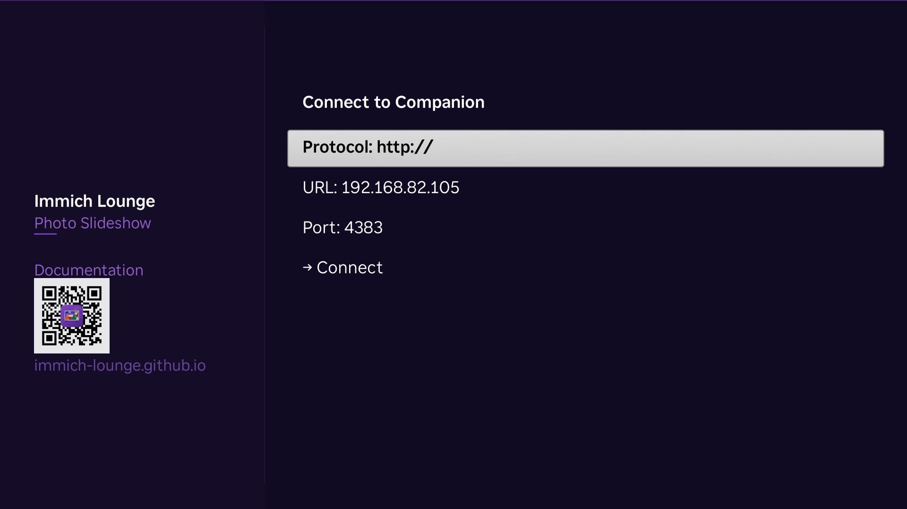

Installation¶
Companion¶
If you already run immich with Docker Compose, the simplest setup is to add one service to that existing compose file.
Use a normal Docker port mapping on 4383. Do not expose the companion to the public internet.
Preferred setup¶
- Add the service to your existing Immich
docker-compose.yml. - Keep the companion in the same trusted LAN as your Roku and immich server.
- Keep
/datapersisted with a Docker volume.
Reference file: docker-compose.yml
Copy/paste snippet:
# docker-compose.yml
# Add this service to your existing Immich docker-compose.yml.
services:
immich-lounge-companion:
image: ghcr.io/immich-lounge/immich-lounge-companion:latest
container_name: immich-lounge-companion
pull_policy: always
ports:
- "4383:4383" # change the left side if 4383 is already in use; do NOT expose publicly
volumes:
- immich-lounge-data:/data
environment:
- ASPNETCORE_URLS=http://+:4383
restart: unless-stopped
volumes:
immich-lounge-data:
docker compose up -d
The companion stores settings, profiles, and cache data under /data.
To update later:
docker compose pull
docker compose up -d
Roku apps¶
Add the Roku apps to your account:
| App | Channel Store | Add Link |
|---|---|---|
| Immich Lounge | Open in Store | Add to Account |
| Immich Lounge Screensaver | Open in Store | Add to Account |
Install on your Roku:
- Immich Lounge
- Immich Lounge Screensaver
The channel handles normal playback. The screensaver is configured from Roku system settings.
First Roku setup¶
Open Immich Lounge on Roku and enter the companion URL:
http://192.168.1.10:4383
Then choose a profile.

Manual companion setup on Roku uses the companion host and port 4383.
Screensaver setup¶
Go to Roku Settings, choose Immich Lounge Screensaver, then open Configure Screensaver.
The screensaver can share the same companion URL and use either the same or a different profile.
Network notes¶
You usually only need two paths to work:
- Roku to companion on port
4383 - Roku to immich on your immich server port, usually
2283
The Roku fetches media and most metadata directly from immich. The companion is not a media proxy.
After install¶
- Use Configuration to understand the available connection and profile settings.
- Use Using the Companion for the normal companion workflow after setup.
- Use Using the Roku Apps for first-run flow, remote controls, and the Roku settings menu.